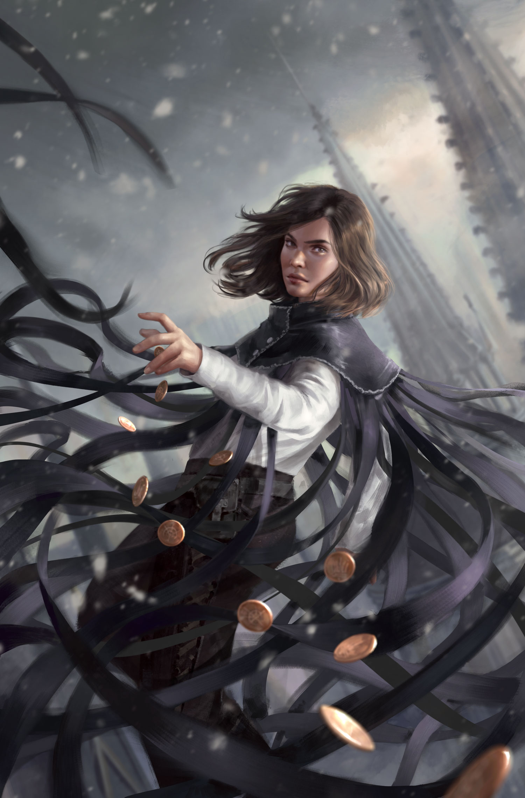
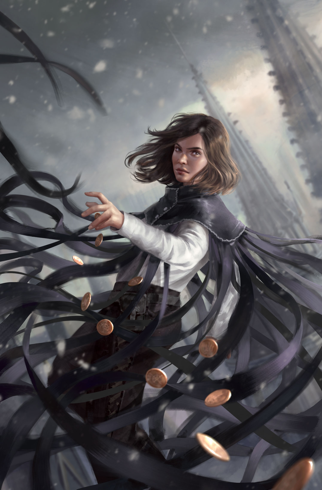

Nacidos de la Bruma es una serie de novelas de fantasía épicas escritas por Brandon Sanderson y publicadas por Tor Books en Estados Unidos. La primera serie, publicada entre 2006 y 2008, consiste en El imperio final (2006), El pozo de la ascensión (2007) y El héroe de las eras (2008)
Brandon Sanderson, (Lincoln, Nebraska, 19 de diciembre de 1975) es un escritor estadounidense de literatura fantástica y ciencia ficción. Nacido en Nebraska,1 es mormón2 y actualmente reside en Provo, Utah, con su mujer Emily, con la que contrajo matrimonio el 7 de julio de 2006.3 Obtuvo un máster en literatura creativa en 2005 en la Brigham Young University,4 donde fue compañero de habitación del campeón de Jeopardy! Ken Jennings.5 Ha sido nominado dos veces para el Premio John W. Campbell.6
 

Durante mil años, han caído las cenizas y nada florece. Durante mil años, los Skaa han sido esclavizados y viven sumidos en un miedo inevitable. Durante mil años, el Lord Legislador reina con un poder absoluto gracias al terror, a sus poderes y a su inmortalidad. Le ayudan «obligadores» e «inquisidores», junto a la poderosa magia de la alomancia. Pero los nobles a menudo han tenido trato sexual con jóvenes skaa y, aunque la ley lo prohíbe, algunos de sus bastardos han sobrevivido y heredado los poderes alománticos: son los «nacidos de la bruma» (mistborns). Ahora, Kelsier, el «superviviente», el único que ha logrado huir de los Pozos de Hathsin, ha encontrado a Vin, una pobre chica skaa con mucha suerte… Tal vez los dos, unidos a la rebelión que los skaa intentan desde hace mil años, logren cambiar el mundo y la atroz dominación del Lord Legislador.